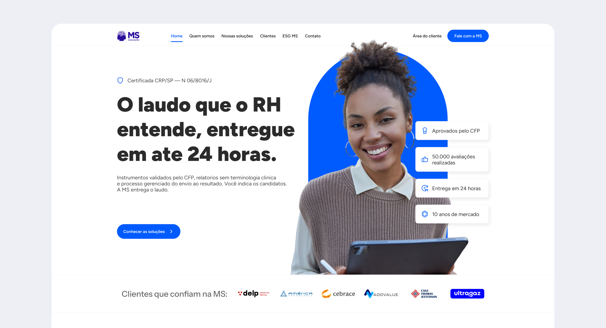
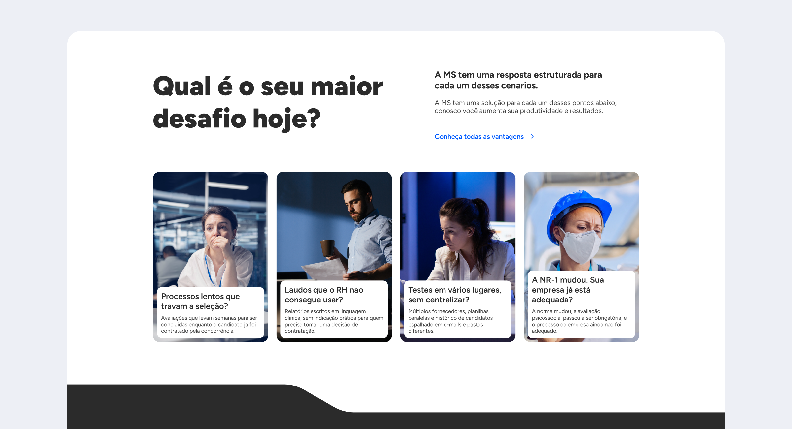
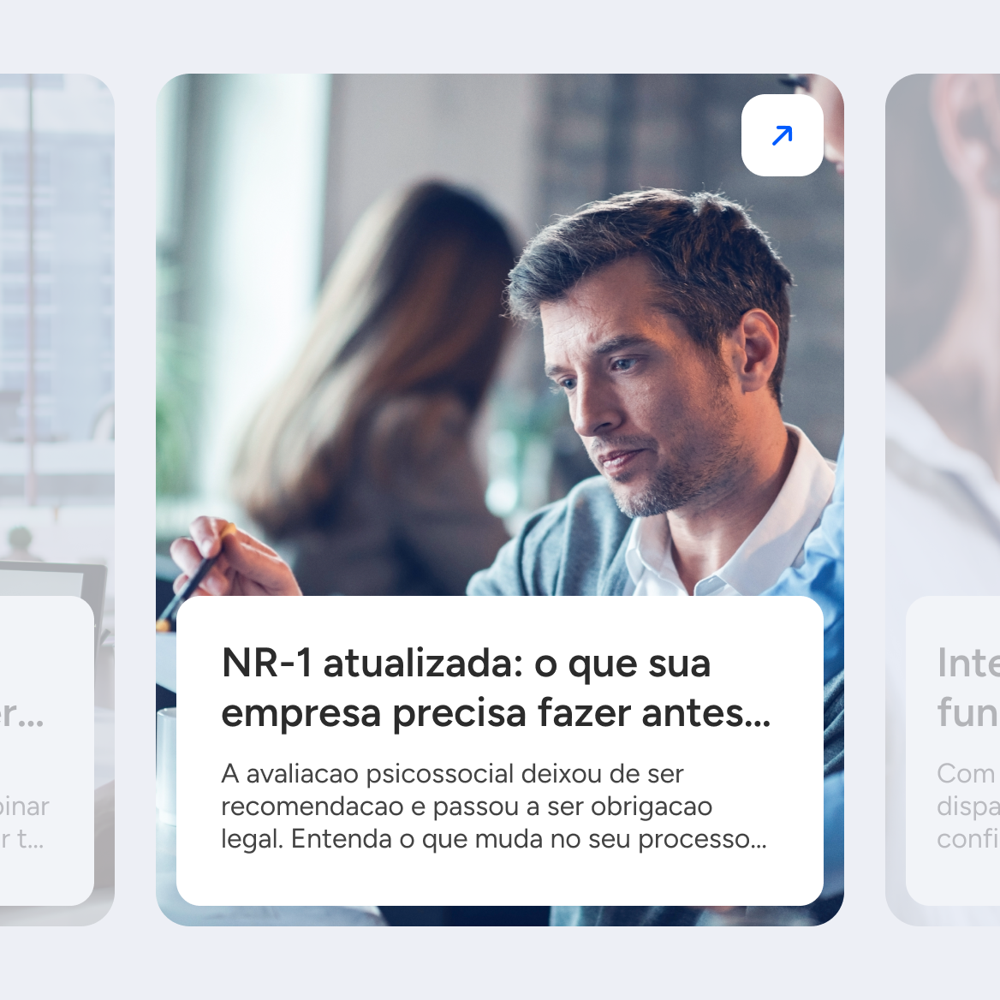
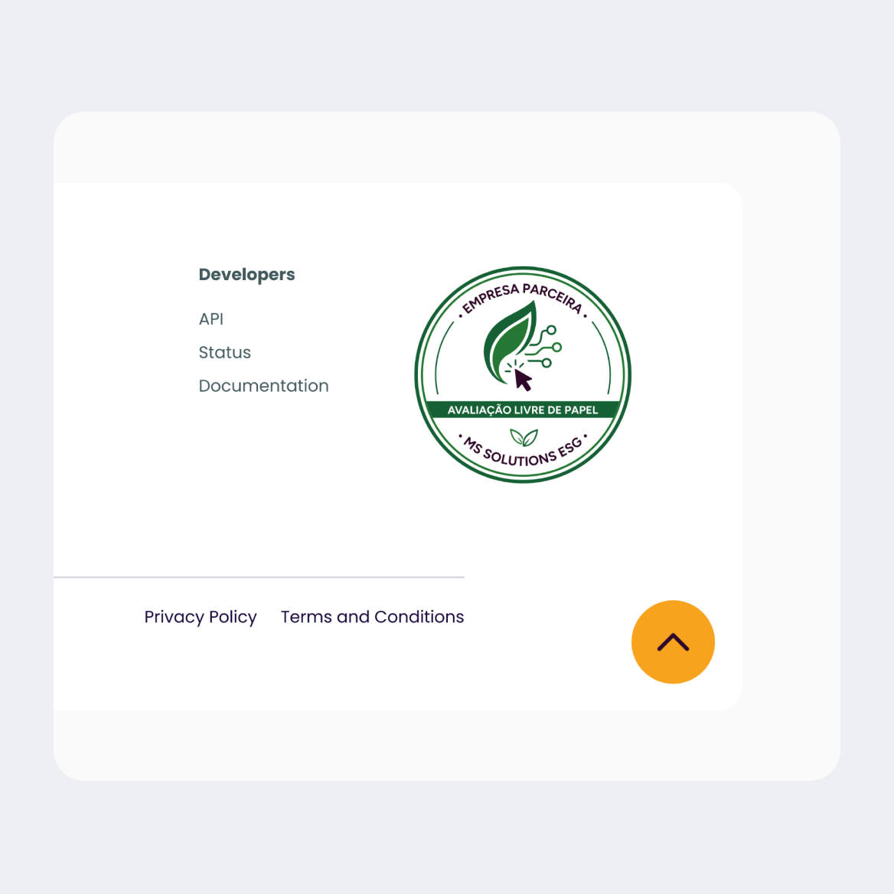
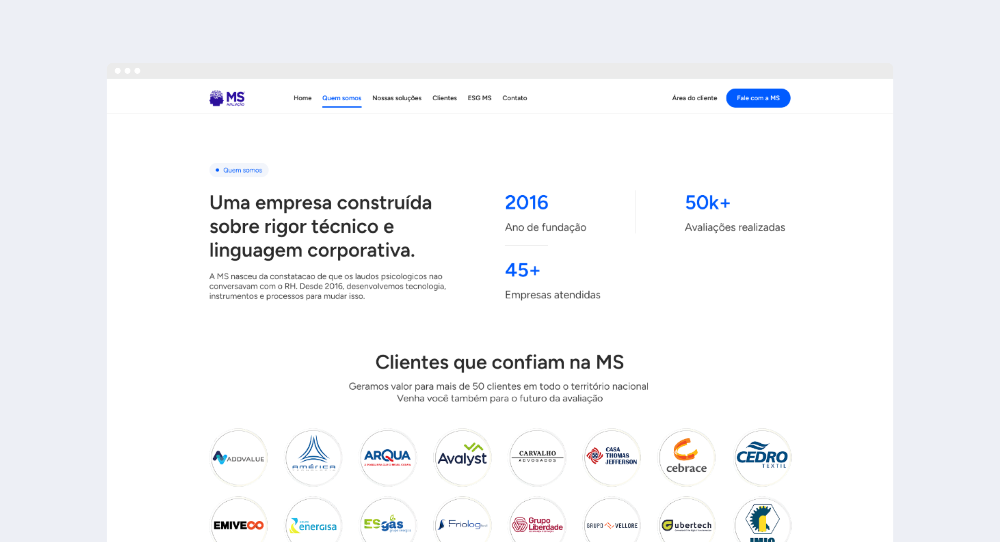
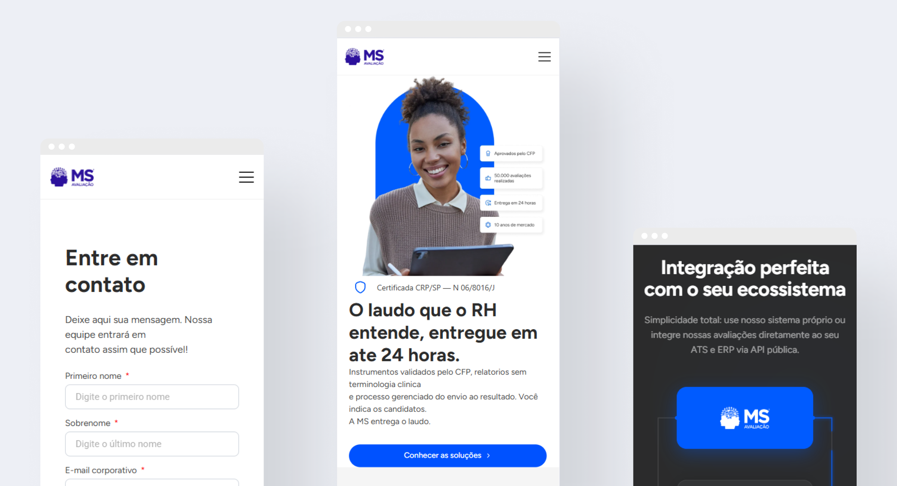

MS Avaliação
A MS Avaliação é pioneira no mercado, atuando desde 2016 como a primeira HRTech do Brasil dedicada à avaliação psicológica online para o RH corporativo.
Nosso trabalho foi traduzir uma operação robusta, com algoritmos patenteados, IA e integrações com grandes players como Gupy e SAP, em uma presença digital que falasse a língua de quem precisa decidir rápido.

- Cliente
- MS Avaliação & MS Solutions
- Ano
- 2026
- Tipo
- Site institucional
- Role
- UX/UI Design / Desenvolvimento Web
O contexto
Apesar da tecnologia robusta e das integrações com grandes players como Gupy e SAP, a comunicação digital da empresa já não refletia o seu momento e a sua estratégia. O site estava ancorado em uma linguagem clínica e técnica, focada demais nas características dos testes em vez da dor do cliente.


O desafio
Reposicionar a MS Avaliação no ambiente digital, transformando uma interface com aspecto de clínica tradicional em uma verdadeira plataforma HRTech focada em conversão. Precisávamos criar um site que conversasse diretamente com o gestor de RH e facilitasse a compreensão de um portfólio complexo de avaliações psicológicas.
A experiência precisava simplificar temas como adequação à NR-1, perfis comportamentais e soluções de gestão do ciclo de vida, destacando o principal diferencial do negócio: agilidade e clareza na tomada de decisão.

A estratégia Vulpi
No Vulpi Studio, acreditamos que cada pixel é intencional. Web design vai além da estética: ele precisa conectar estrutura, conteúdo e tecnologia ao objetivo do negócio. Para a MS, nosso primeiro passo foi entender a fundo o DNA e os processos da empresa para mudar o tom de voz e a hierarquia da informação.
Saímos do modelo de lista de funcionalidades e construímos uma jornada baseada nas dores do RH. A promessa principal se tornou a estrela da página inicial: "O laudo que o RH entende, entregue em até 24 horas".
Além disso, reestruturamos a arquitetura da página de Soluções para acabar com a redundância, dividindo claramente os serviços em duas frentes de atuação: Instrumentos Exclusivos MS (Seleção) e Soluções Organizacionais (Gestão e Ciclo de Vida).

A execução de UX/UI & Desenvolvimento
Design direcionado a HRTech: tangibilizamos a tecnologia e a Inteligência Artificial presentes na MS, adotando uma interface limpa, moderna e orientada a dados, substituindo a linguagem de psicologês por argumentos corporativos claros.
Componentes escalonáveis (Bento Grid): para apresentar o vasto catálogo de ferramentas, como Pesquisa de Clima, Avaliação de Desempenho e Engajamento, sem sobrecarregar o usuário, aplicamos cartões organizados que facilitam o escaneamento e a leitura.
Visualização de dores: criamos seções de identificação imediata, transformando objeções comuns de RH em cards visuais e interativos, como processos lentos e laudos que o RH não consegue usar.
Alta performance e integração: desenvolvemos o front-end garantindo que a nova estrutura fosse responsiva, rápida e destacasse visualmente a API pública do cliente.

O resultado
O novo ms.solutions equilibra usabilidade, estética e performance. O produto digital ficou limpo, de alto padrão e totalmente focado em conversão, com uma navegação que desperta confiança institucional desde os primeiros segundos.
Agora fica claro que a MS não apenas vende testes, mas terceiriza de ponta a ponta o processo de avaliação com tecnologia, deixando a tomada de decisão mais rápida, precisa e compreensível para o RH.
O valor real
O trabalho realizado pela Vulpi nos surpreendeu positivamente desde o início. Nosso site já não refletia mais o momento, a estratégia e o posicionamento da nossa empresa. A Vulpi não apenas compreendeu essa necessidade, como também conseguiu entender nosso DNA, nosso processo e a essência do nosso negócio, traduzindo tudo isso de forma extremamente eficaz em uma presença digital muito mais alinhada, profissional e estratégica. Isso, para nós, é valor real. Recomendo com muita segurança e reconhecimento. Parabéns à Vulpi pelo excelente trabalho.Marcio Santangelo
CEO, MS Avaliação & MS Solutions